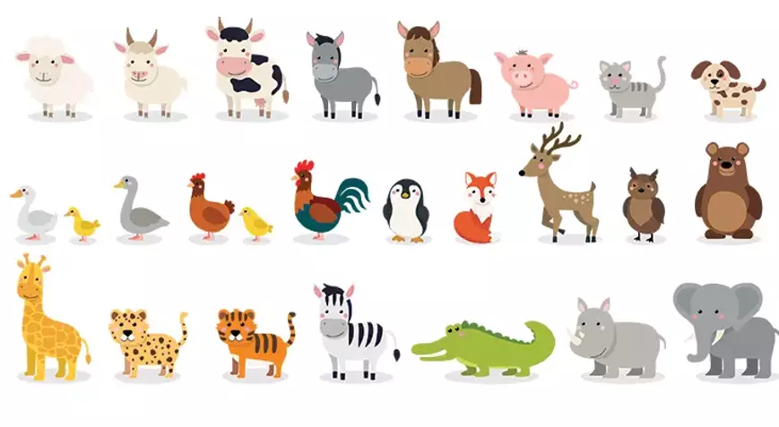
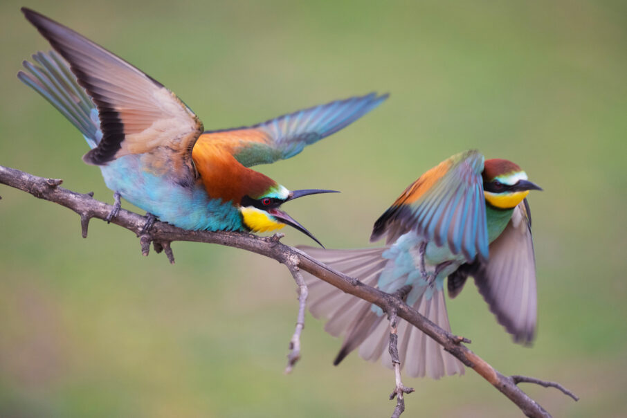

Hayvanlar alemi, dünyadaki yaşamın önemli bir parçasıdır ve çeşitlilikleri ile dikkat çekerler.
Memeliler, sıcakkanlı omurgalı hayvanlardır ve genellikle kürkleri ile tanınırlar. Köpekler, kediler, filler ve insanlar gibi birçok memeli türü vardır.
Sürüngenler soğukkanlı omurgalı hayvanlardır ve pullarla kaplıdırlar. Yılanlar, timsahlar, kaplumbağalar ve kertenkeleler sürüngenlere örnektir.

Kuşlar, uçabilen ve genellikle tüylerle kaplı olan omurgalı hayvanlardır. Kartallar, serçeler, penguenler ve deve kuşları gibi birçok kuş türü bulunmaktadır.
